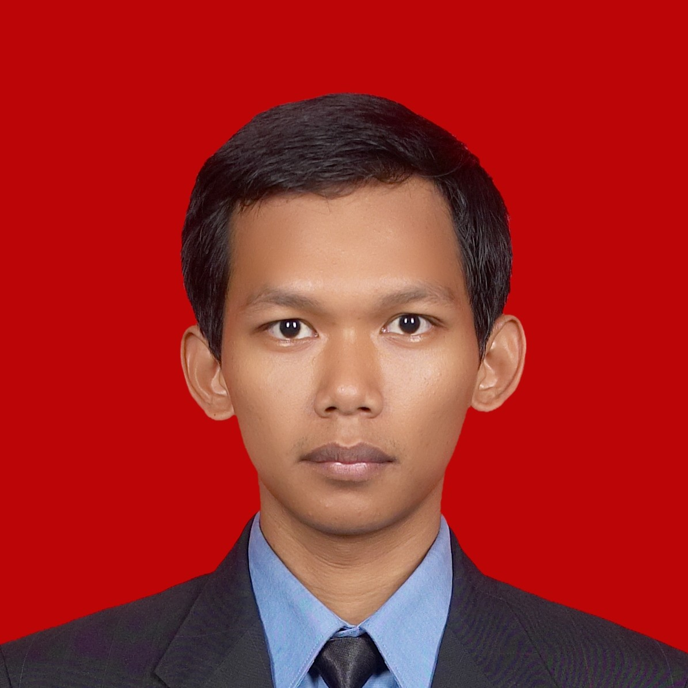

About me
My name is Jihad kunnaji, currently living in Kota Depok, Jawa Barat. This year
am 26 years old.
I don't have any formal educational background in IT field, my educational background is Mechanical
Engineering.
Currently i am working as an operational staff at a company in Kota Depok. Altough don't have an IT
background, i actually interested in computer and internet related things. So, this year i decided to take a
course to start my live in IT field.
Beside computer and internet related things, i also interested in martial arts. For a few years i already
practiced karate.
Here's a video about it: